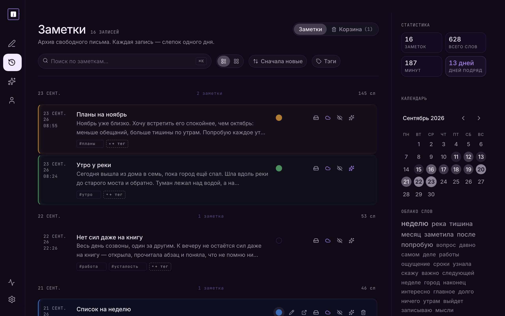
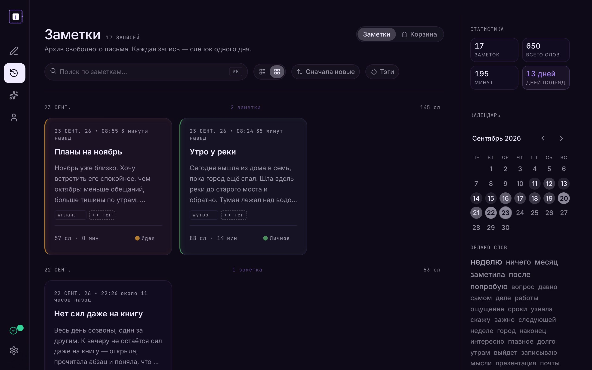
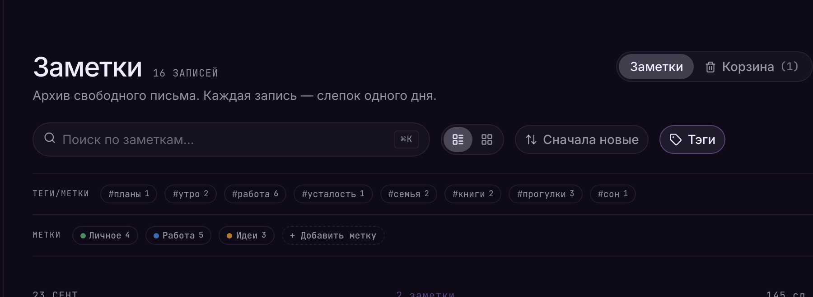
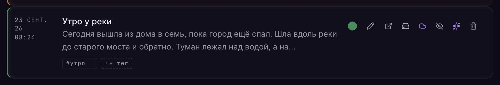
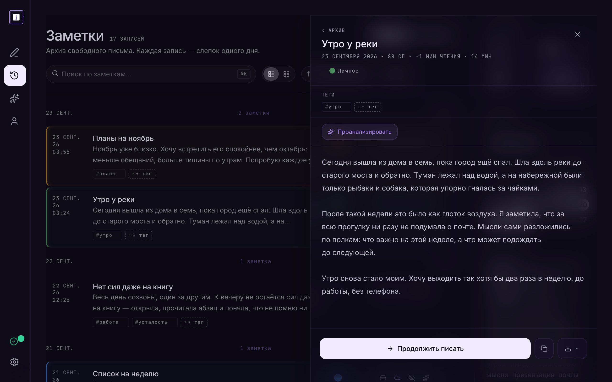
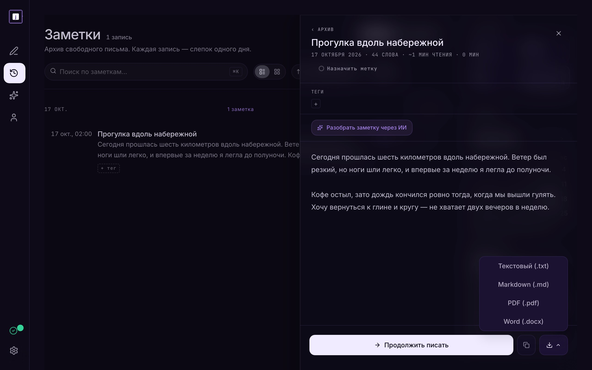
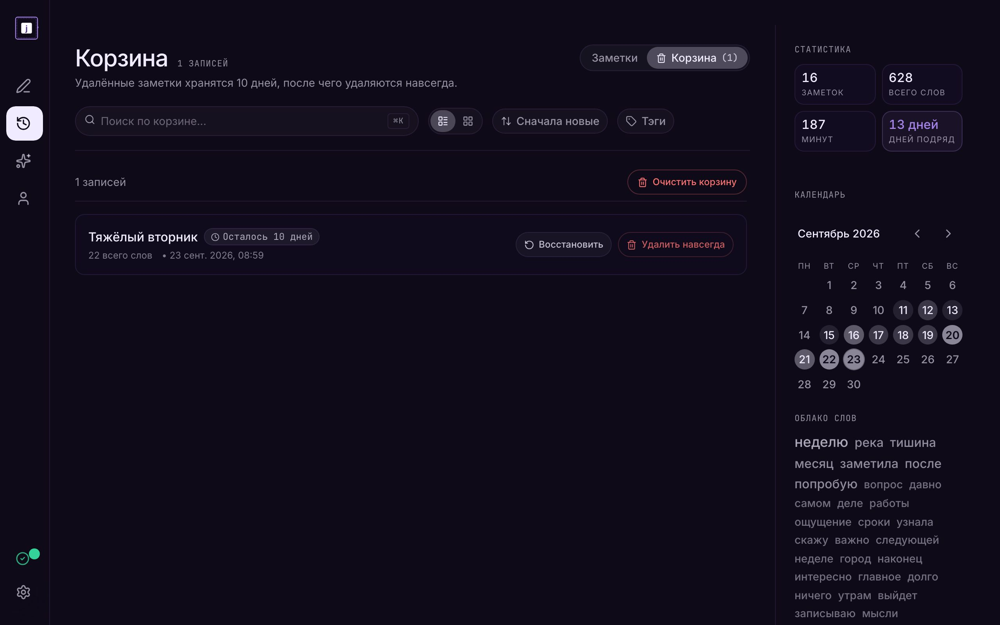

Заметки
Всё, что вы написали, лежит на странице «Заметки» в меню слева. Здесь заметки можно найти, разложить по тегам и меткам, перечитать, выгрузить в файл или удалить.
На этой странице
Список заметок
Наверху страницы — заголовок Заметки и счётчик записей. Справа от них — две вкладки: Заметки и Корзина (в скобках — сколько в ней лежит).

Список или сетка
Переключатель Список / Сетка меняет вид. В обоих видах действия с заметкой собраны в меню «⋯» (Действия с заметкой): Предпросмотр, Изменить название, Назначить метку, копии на устройстве и в облаке, ИИ, Удалить заметку. На компьютере то же меню открывается правым щелчком по заметке. Рядом с «⋯» — значки хранения и разбора ИИ: они и показывают состояние, и нажимаются (см. ниже). В списке они справа в строке, в сетке — в подвале карточки. На телефоне в строке списка вместо них одна кнопка «⋮», и все действия — в ней. Сетка удобна, чтобы пробежать глазами: на карточке видны дата, название, первые строки, теги, число слов и минут, метка; щелчок по карточке открывает заметку. Выбранный вид приложение запоминает.

Сортировка
Кнопка со стрелками ↕ открывает список вариантов, рядом с ней написан текущий:
- Сначала новые — так список устроен по умолчанию;
- Сначала старые;
- Самые длинные и Самые короткие — по числу слов;
- По названию А→Я и По названию Я→А.
Выбор тоже запоминается.
Группы по дням
Когда заметки отсортированы по времени («Сначала новые» или «Сначала старые»), они собраны в группы по дням. В заголовке группы — дата, сколько в этот день заметок и сколько всего слов. При сортировке по длине или названию групп нет, список идёт сплошной.
Поиск
Поле Поиск по заметкам... стоит над списком. Быстро попасть в него можно с клавиатуры:
- Ctrl+K (⌘+K на Mac) — откуда угодно на странице;
- / — если курсор сейчас не стоит в каком-нибудь поле.
Поиск ищет по названию, тексту и тегам и прощает опечатки: «превет» найдёт «привет». Найденное подсвечивается прямо в списке.
Имя человека в запросе можно ставить в любом падеже: «Оля», «с Олей», «Олю» находят одни и те же заметки. Посторонних записей по такому запросу примешивается меньше — совпадение ищется в форме имени, а не по первым буквам.
Если ничего не нашлось, появится «Ничего не найдено по «…»» и кнопка Сбросить поиск.
Теги и метки
Чтобы разложить заметки по темам, есть два инструмента.
- Теги — слова вроде #сон или #работа. У заметки их может быть сколько угодно.
- Метка — цветной кружок, у заметки она одна. Удобно для крупных разделов: «дневник», «идеи», «черновики».
Кнопка с иконкой тега и подписью Теги/Метки рядом с сортировкой раскрывает над списком две полосы: теги и метки. Повторное нажатие их прячет.

Отбор по тегам
Нажмите на тег — в списке останутся заметки с ним. Можно выбрать несколько тегов, тогда останутся только заметки, в которых есть все выбранные теги сразу. Кнопка сбросить ✕ снимает выбор.
Если навести мышь на тег, у него появятся карандаш и крестик:
- карандаш — переименовать тег. Новое имя встанет во всех заметках. Введите его и нажмите Enter, Esc — отмена;
- крестик — удалить тег. Приложение спросит «Удалить тег #…? Он будет снят со всех заметок.» Сами заметки при этом остаются.
Отбор по меткам
С метками правило другое: если выбрать несколько, в списке останутся заметки с любой из них. Рядом с каждой меткой написано, сколько у неё заметок.
Чтобы завести новую метку:
- Нажмите + Добавить метку в конце полосы меток.
- Введите название и выберите цвет. Кружок с «+» открывает палитру, если готовые цвета не подходят.
- Нажмите Сохранить или Enter.
Наведите мышь на метку, чтобы её изменить: карандаш позволяет переименовать метку и сменить цвет, крестик — удалить («Удалить метку? Она будет снята со всех заметок.»).
Метку ставят самой заметке — из строки в списке или из предпросмотра.
Статистика, календарь и облако слов
Справа от списка — колонка с тремя блоками. Она видна, когда окно браузера достаточно широкое.
- Статистика — сколько заметок, всего слов, минут письма и дней подряд. Если включён отбор по тегу, метке или месяцу, цифры считаются только по нему, а в заголовке написано, по чему именно. Крестик Сбросить фильтр возвращает всё.
- Календарь — месяц, где дни раскрашены по тому, сколько вы в них написали. Наведите мышь на день, чтобы увидеть число заметок и слов. Нажмите на день — в списке останутся заметки этого дня, нажмите ещё раз — отбор снимется. Нажмите на название месяца — останутся заметки за весь месяц. Заметка попадает в день, если вы писали её в этот день хотя бы раз.
- Облако слов — 30 слов, которые встречаются у вас чаще всего. Нажмите на слово, и оно окажется в поиске. Облако строится по заметкам, которые есть на этом устройстве.
«В этот день»
Иногда над списком появляется карточка В этот день: заметка, написанная ровно год, полгода или месяц назад. Нажмите на неё, чтобы перечитать. Если напоминание не нужно, нажмите крестик Скрыть напоминание — эту заметку карточка больше не покажет. Пока вы что-то ищете, карточка спрятана.
Строка заметки
В виде «Список» у каждой заметки своя строка: слева дата и время, в середине название, начало текста и теги, справа кнопки. Часть кнопок появляется, только когда вы наводите мышь на строку.

Название
Если вы дали заметке название, в строке будет оно. Если нет — первая строка текста. Если текста ещё нет на этом устройстве, будет «Заметка из облака», а если нет вообще ничего — «Без названия».
Чтобы переименовать заметку, дважды щёлкните по названию или выберите Изменить название в меню «⋯». Enter сохраняет, Esc отменяет. Пустое название не сохранится.
Значки у названия
- только в облаке — заметка хранится в облаке, а на этом устройстве её текста пока нет;
- только локально — заметка слишком большая для облака (больше примерно 700 000 символов) и живёт только на этом устройстве;
- замок и «Заметка заперта» — заметка зашифрована, а сейф сейчас заперт. Откройте сейф, и текст появится;
- восклицательный знак и «Не удалось прочитать» — текст заметки не получилось расшифровать или прочитать;
- перечёркнутый глаз — он не у названия, а среди значков справа: красный — заметка скрыта от ИИ. Подробнее — в разделе «ИИ-собеседник и разбор».
Запертую или нечитаемую заметку нельзя переименовать, поменять ей дату или теги.
Дата и время
Нажмите на дату слева — откроется окошко, где можно поставить другую дату и время. Нажмите Сохранить или Отмена. Это удобно, если вы записали что-то задним числом.
Теги заметки
Под текстом строки нажмите + тег и введите слово. Приложение подскажет теги, которые у вас уже есть: выберите стрелками ↑ ↓ и нажмите Enter. Решётку в начале писать не нужно. Такой же тег второй раз не добавится, даже если набрать его другими буквами (заглавными или строчными). Крестик на теге убирает его из заметки.
Метка заметки
Цветная полоса слева — метка, строка с меткой подсвечивается её цветом. Сама полоса не нажимается. Чтобы поставить или сменить метку, откройте «⋯» (или щёлкните по строке правой кнопкой): в разделе Назначить метку — цветные кружки ваших меток. Щелчок по уже выбранной метке или Без метки снимает её. Если меток ещё нет, сначала заведите их — см. выше.
Остальные значки
- открыть заметку для чтения — щелчок по её тексту под названием или пункт Предпросмотр в меню «⋯». Одиночный щелчок по названию открывает только запертую или нечитаемую заметку;
- диск и облако показывают, где хранится заметка: на этом устройстве, в облаке или там и там. Есть копия — значок горит цветом темы (в стандартной теме — фиолетовым), нет — приглушён, ждёт отправки — жёлтый. Это кнопки: как их читать и что будет, если на них нажать, — в разделе «Облако и устройства»;
- искорки — разбор ИИ: горят, если заметка разобрана; щелчок разбирает её или удаляет разбор. Перечёркнутый глаз, если он есть, скрывает заметку от ИИ и возвращает обратно; у скрытой он красный;
- удалить заметку — пункт Удалить заметку в меню «⋯», см. ниже.
Предпросмотр
Предпросмотр — панель справа, в которой заметку удобно перечитать. Её ширину можно менять: потяните за левый край. Закрыть панель можно крестиком или ссылкой ‹ Архив вверху.

Сверху вниз в панели:
- Шапка. Название и строка: дата, число слов, примерное время чтения, сколько минут вы писали. Если заметку сохраняли несколько раз, в конце будет, например, «3 версии». Это только счётчик: открыть старую версию или вернуться к ней нельзя.
- Метка. Под шапкой можно выбрать метку, снять её (Без метки) или сразу завести новую через + Добавить метку.
- Теги. Работают так же, как в строке списка.
- Блок ИИ — что заметил ИИ в этой заметке. Он описан в разделе «ИИ-собеседник и разбор».
- Текст заметки.
- Связанные записи — до четырёх ваших заметок, похожих на эту по смыслу. Блок появляется, если такие нашлись; нажмите на заметку, чтобы открыть её.
Внизу панели — кнопки.
- Продолжить писать открывает заметку в редакторе. Это единственный способ изменить её текст: в предпросмотре текст только читается.
- Кнопки копирования и экспорта описаны в следующем разделе.
Скопировать и экспортировать
Скопировать текст
Кнопка с двумя листками (подсказка Скопировать как) открывает окно с двумя вкладками:
- Markdown — с разметкой, для редакторов и приложений, которые её понимают;
- Текст — просто текст.
Нажмите Скопировать и вставьте текст куда нужно.
Сохранить в файл
Кнопка со стрелкой вниз (подсказка Экспортировать) открывает меню форматов:

- Текстовый (.txt) — обычный текстовый файл. Сверху — название, дата, число слов, время и теги, дальше текст;
- Markdown (.md) — текст с разметкой и сведениями о заметке в начале;
- PDF (.pdf) — приложение открывает заметку в новой вкладке и сразу вызывает печать. В окне печати выберите «Сохранить как PDF». Заодно может скачаться та же заметка в виде страницы .html — её тоже можно открыть в браузере и напечатать;
- Word (.docx) — файл для Word и похожих программ.
Файл называется так же, как заметка. Если браузер умеет делиться файлами, сначала откроется системное меню «Поделиться», иначе файл просто скачается.
Удаление и корзина
Удалённая заметка не пропадает сразу, а 10 дней лежит в корзине.
- Откройте меню «⋯» у заметки (на компьютере можно правым щелчком по ней, на телефоне — кнопка «⋮») и выберите Удалить заметку.
- Приложение спросит «Удалить эту заметку?» и напомнит, что она пролежит в корзине 10 дней. Нажмите Удалить.
Чтобы посмотреть удалённое, откройте вкладку Корзина наверху страницы. В ней есть свой поиск, Поиск по корзине....

На карточке удалённой заметки — название, число слов, дата удаления и значок с часами: «Осталось N дней». Когда остаётся два дня или меньше, значок краснеет. Нажмите на карточку, чтобы перечитать заметку.
- Восстановить возвращает заметку в список.
- Удалить навсегда стирает одну заметку, не дожидаясь срока.
- Очистить корзину стирает всё, что в ней лежит.
Через 10 дней заметка удаляется из корзины сама.